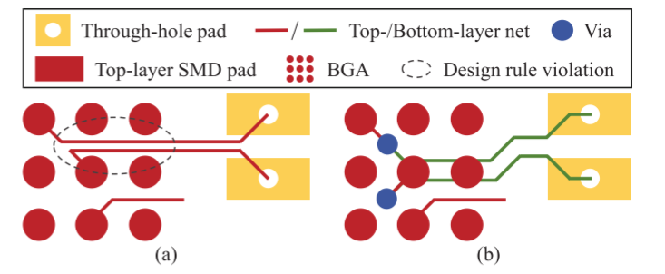
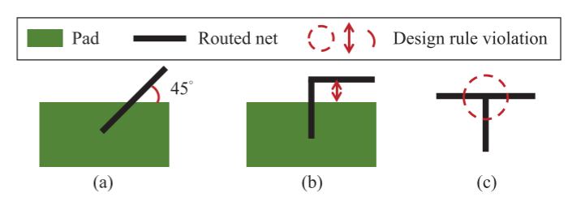
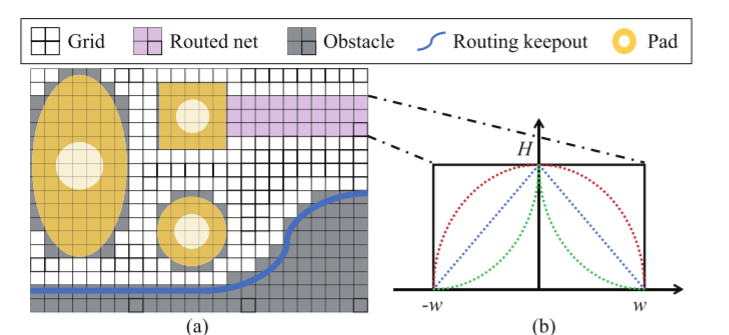
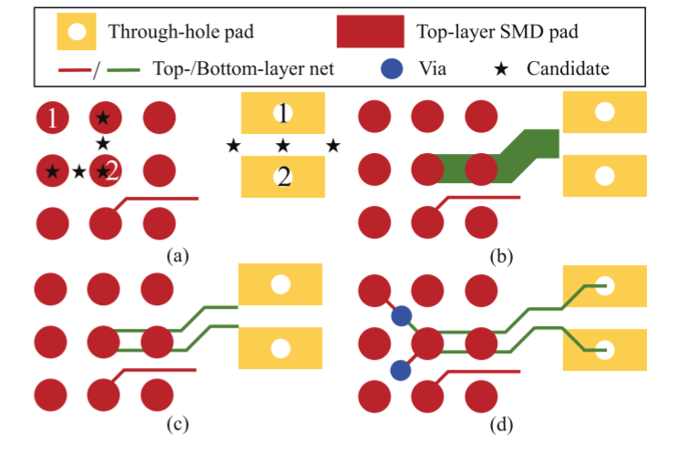
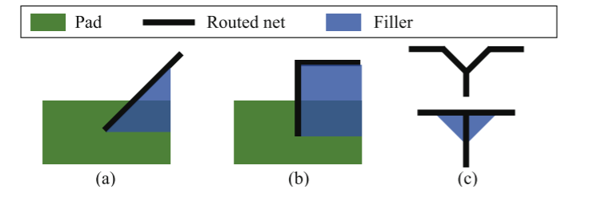

A Unified Printed Circuit Board Routing Algorithm With Complicated Constraints and Differential Pairs
摘要内容：
前工作都关注点在BGA逃逸布线上。作者认为现在很多板子除了BGA以外还有很多类型，想提出一种实际的全板布线通用算法

论文提出了与直接走线的区别，直接走线会产生间距违规，而通过打孔的方式生成过孔后再在其他层进行走线效果更好（虽然这在使用EDA软件进行手工布线很容易，但是在自动布线是一个挑战）。因此多层布线时本文的一个点。这个布线框架可以处理差分对，电源以及地网络，还有其他普通网络。这个框架使用的是基于网格的代价计算的A*算法。
抽象的问题描述
多层PCB布线问题：给定一些表贴焊盘，一些通孔焊盘，网表$N$，规则，连接所有网络$n_i\in N$ ，来保证这里没有设计规则违规，并且线程最短
本文使用的规则
- 不允许同一层的的线段相交，并且需要保持特定的安全间距
- 布线角度可以是90度或者135度，但不能是45度，（直角钝角可以，但是锐角不行）
- 布线进入焊盘不应该锐角进入，并且线经过焊盘必须留出一定的间隔
- 当布线中有有3段相交时应该保持Y形状而不是T形状
- 差分对应该靠得近，并且保持相同长度

本文算法结构
本文的结构如下，首先根据任意形状的焊盘来初始化布线网格。然后迭代进行布线，布线结束后再进行规则检查并处理违规情况。

布线网格初始化
将表贴焊盘和通孔焊盘、另外加上一些障碍区域 例如 禁布区域等 栅格化到布线网格中去。

迭代PCB布线
A*搜索算法是通过代价函数，可以使A搜索适应不同路由目标的需要。作者认为之前的算法都是分开计算每一种情况的代价的，如电源网络，差分对网络等。这篇文章统一进行处理，一起把这些加到代价函数中去考虑布线的生成。
作者提了一下A*算法：
$$
f(x) = g(x) + h(x)
$$
这是个很经典的公式，其中g(x)可以表示从起点到现在的点x的代价，h(x)可以表示为从现在的点x到终点的估算代价。因为本文中支持斜着布线也就是45°和135°的布线，所以h(x)被写成了
$$
minD = min(|x.x-t.x|,|x.y-t.y|)
$$
$$
maxD = max(|x.x-t.x|,|x.y-t.y|)
$$
$$
h(x) = maxD - minD + \sqrt{2}*minD
$$
因为网络是一个一个生成的，前面网络的连线会干扰后续的，因此前面的连线也应该被视为障碍区域，因此加了一个函数来根据到网络中心的距离来确定网格的cost来协调布线。
$$
OC_{\text{routed_net}}(r) = H - H * \left( \frac{|r|^c}{w^c} \right)
$$
$$
c_i = c_{i-1} \cdot (\lambda + 1)
$$
$OC_{\text{routed_net}}$表示障碍成本函数，r表示到网络中心的距离，w是网络宽度，H是一个很大的值，作者说是为了防止走线交叉，不太清楚这里c到底表示什么，$\lambda$是一个用户指定的值。
电源/地网络布线
$$
g_p(x) = \alpha * C_{\text{layer}} + \beta * C_{wl} + C_{\text{obstacle}}
$$
$$
C_{wl} = \gamma * C_{\text{Euclidean}} + C_{\text{layer_change}}
$$
其中考虑了同一层上的$C_{\text{Euclidean}}$，和不同层$C_{\text{layer_change}}$走线方式的共同成本
差分对布线
思路是将两根线看成一个整体，布线之后再拆开的操作
1.首先寻找pad的不同方向，生成候选点，找到能够让差分对pad能够同时布出平行的线的方向并候选点
2.第二步是利用扩大线宽和间隙搜索区域，在pad对两侧的候选归并点之间进行布线
3.将第二步的布线网解耦为两个布线网，同时解耦后的布线网的起始点和结束点仍然接近候选合并点
4.最后，第四步是将每个解耦网路由到每侧相应的pad上，并在BGA中进行按需打孔

信号网络布线
$$
g_s(x) = \delta \cdot C_{\text{layer}} + \epsilon \cdot C_{wl} + \eta \cdot C_{\text{bend}} + C_{\text{obstacle}}
$$
根据设计规则进行后处理
在微调来降低违反设计规则的情况，通过填充额外的filler来修复这些违规

蓝色部分是填充部分